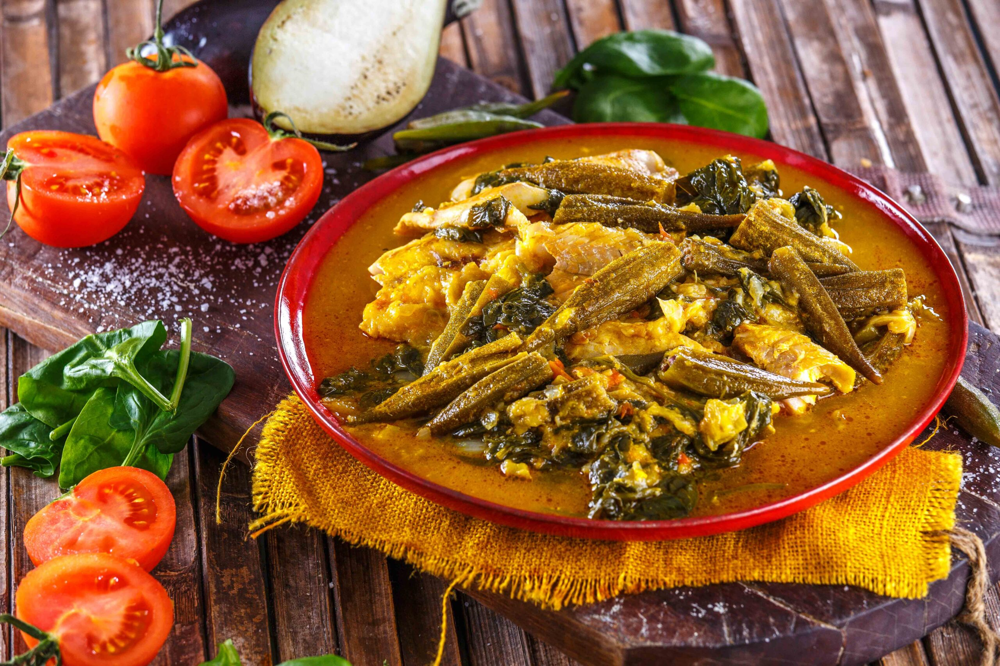

Lasagna

Description
Fish calulu or calulu de peixe is a signature Angolan and Sao Tome fish stew with different vegetables, typically cooked in palm oil. Calulu de peixe is rich in different flavours and spices, and is hailed as one of the most popular Angolan dishes.
Ingredients
The Allrecipes community adores this lasagna recipe because it's incredibly customizable, so you can easily alter the ingredient list to suit your needs. If you want to stay true to the original recipe, though, these are the ingredients you'll need to add to your grocery list.
- Codfish fillets, cut into large bite-sized pieces - 2 lbs
- Onion, finely chopped - 1
- Garlic cloves, minced - 3 to 4
- Medium-sized tomatoes, diced - 3 to 4
- Okras, stems removed and chopped diagonally - 8 pieces
- Spinach (you can substitute kale, sweet potato leaves, collard greens or cassava leaves) - 1 lb
- Red palm oil - ¼ cup
- Eggplant, diced into cubes - 1 cup
- Pepper - to taste
Steps
- Before preparing the ingredients, place the codfish into a bowl and season with salt and lemon juice on each piece. Set it aside to marinate for 20 to 30 minutes and prepare everything else.
- In a pot, heat the palm oil on a medium-high flame. When ready, saute the garlic and onions for a few minutes until softened.
- Add the eggplant, tomato, okra, bell pepper, and bay leaf into the pot. Saute them for a few minutes until everything is nicely incorporated.
- When done, add the spinach or green leaves you have into the pot and give it a gentle stir to mix everything. Then, add a cup of water (or you can also use vegetable broth) onto the pot.
- Add in the marinated fish with the other ingredients, like making stew or soup. You can also start layering the fish first before the ingredients.
- Once the fish is added, cover the pot, then lower the heat. Let the calulu cook for 15 to 20 minutes.
- After 15 to 20 minutes, lower the heat until the stew only simmers. Uncover the pot then give it a stir.
- If you want a thicker consistency, add the arrowroot or flour to the mixture. Mix it and cook the calulu again for another 5 minutes until the soup thickens.
- Turn off the heat, then serve the calulu on a plate or bowl. Serve it with rice if preferred, then enjoy!
What do you want to go next?